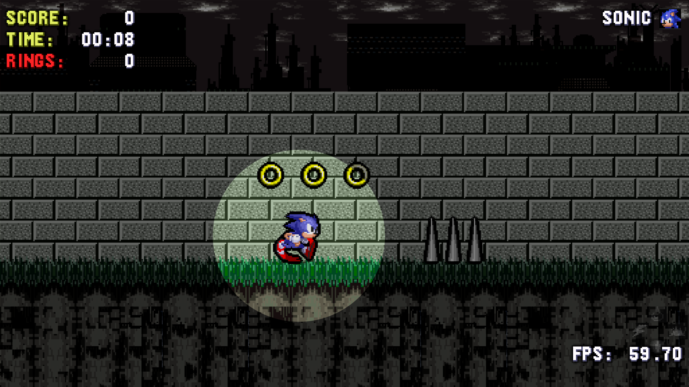

Rendering Sonic in HTML (not canvas)
This project is insane. That is on purpose. Its a Sonic engine, written completely from scratch, rendered in HTML. Yes, Sonic is a <DIV> box. I only started this project to stress test a web framework I created, and to stress test my knowledge of document rendering and the browser in general. Things went very well, so I may have gotten a bit extreme with this “test project.”
When normal people want to make a browser game, they’ll use canvas, and usually Web GL, allowing the developer to make use of the GPU. However, CSS also allows for access to the GPU. Once I'd realized the performance level allowed for simple games to be expressed, I started wondering: “How far can I really take this?”
I have been developing web pages since I was a child. I had my first website in 1998. It listed Pokemon cheats, and it looked terrible. Ever since then, I’d wondered if you could do a Sonic game in HTML. Eventually, I learned about Javascript and before I’d become a teenager I wrote the idea off as completely insane and probably impossible.
Then hardware accellerated CSS came out. I spent time learning it, and over the years the browsers improved, and I kept at it. I wrote my own web framework for Javascript and needed a project to use as a stress test. So I thought “What could be better at stressing the browser than taking a Sonic game and making everthing in it an HTML element?”
So I created Sonic 3000 (the game) and Pixel Physics (the engine). The goal was originally to clone the 8 bit games, that were released for the handheld GameGear. The reason was that they were a little simpler and much less graphically intense than the mainline Genesis games. Once I got the physics right and saw how it ran, I immediately decided not only to try to match the Genesis games, but attempt to build on them. I believe I’ve succeeded at that.
You can view the project live at https://pixel-physics.seanmorr.is/Graphics
Each backdrop is a single HTML element. The parallax depth effect is generated by cutting the background image into a series of transparent PNGs. They’re applied to the element with a multivalued background-image style. They have a background-repeat set to repeat=x. The background-image-x style is also multivalued, where each image’s x value is set to a a decimal multiplied by custom property (--x) using CSS calc. When this one, single variable is modified, each strip moves by that amount, times its decimal. Thus we can scroll the baground horizontally with a depth effect.
Since PNGs are transparent, they can be overlayed. This not only allows one element to appear to be in front of another, but also allows the background-color to shine through. By transitioning the background color through blues, oranges, purples and greys, different times of day can be simulated, changing while the background scrolls with parallax.
In Seaview Park Zone, all the layers in the background are literally just the background of one, single HTML element. That includes the stars, the clouds, the island and all their reflections in the water. It was tedious work ensuring all the strips of clouds had the same paralax factor, but worth it for the depth effect. The lightning in the second half is done by rapidly transitioning the background color, which will show where the clouds are semitransparent
Objects are just DIV boxes. They’re animated in a similar way to backdrops, but they only use one image at a time. Graphics for each object are organized into “sprite sheets” with each frame of animation evenly spaced, and each animation on its own row. With the appropriate CSS @keyframe definitions and selectors, I can change the animation by altering the data-animation attribute on the element.
Tiles and objects are layed out graphically in Tiled, which is a dedicated editor for tile-based maps. Tile based mapping is convenient for multiple reasons: Its fast, compact, efficient and its what the genesis games used. With this method its very easy to write a speedy algorithm to cycle them into place and mimic the style of the original games.
SVG
SVG is used in a lot of different ways in this project, which is relatively unexpected since 16 bit Genesis games are raster graphics, and SVG is generally concerned with vector images. However, it came in handy with its clip-path to generate a simple spotlight effect. Even more powerfully, its able to generate displacement effects using color maps, which I used to create the wave effect for underwater areas. You’ll notice that although Sonic’s sprite is a single HTML element, the effect is only applied to the area with the water region. You can also see displacement effects when Sonic is skidding or charging a spindash, when you double tap the jump button and perform a doublespin, or when he’s standing on a bridge.
The directional motion blur effect is something I’m especially proud of. Directional blur in HTML/CSS is supposed to be impossible. You only get one blur() filter in CSS, and it’s omnidirectional (all directions at once). SVG takes it one step further by allowing for a blur-x and blur-y, but applying both of these equally will not be equivalent to a 45-degree motion blur. It works by nesting the entire tile layer in an element that is rotated so that the desired direction is displayed as horizontal. Another nested element applies a simple blur-x, and a third nested element cancels out the original rotation. Thus allowing for an ‘impossible’ blur effect. The blur is applied only to the ground and not the actual game objects as a courtesy to the player.
PNG
To correctly cycle the colors of Hypersonic’s pallet while animations run, I’d need to use an additional 8 sprite sheets, one for each color, and white as a transitional state. While this would have been a workable solution, I didn’t find it acceptable. Rather than re-draw the entire thing using canvas, I decided to use a PNG with indexed color. Once I had that I opened up the PNG as raw bytes in javascript, I located the pallet data and replaced the colors there. This way I only need to change one byte for each color I want to replace. Once I’ve done that I can throw the resulting bytes into a blob, which I can take the URL for and use it in CSS with a transition on background-image to cycle the sprite sheets while animations are playing. This can be applied to any sprite in the system, so long as its using a PNG with indexed colors.
Physics
Solid ground is defined by an array of tiles stored in groups in PNG images. Transparent pixels are empty and pixels with any opacity are solid. The source image is sampled with a canvas, and when each pixel is tested its solidity is cached. If the same tile is encountered elsewhere on the map, the cache is used.
The slope of the ground is determined by sampling a few pixels ahead and behind the player’s current position. To prevent jarring changes, the value is averaged with the values from the last few frames. This list is cleared if Sonic jumps or otherwise leaves the ground. When Sonic lands, this angle is used to calculate how much of his vertical momentum should be translated into horizontal momentum.
A 2d ray is cast along the direction of motion whenver an object moves. It length is eqivalent to the object’s speed. If any of these pixels are solid, the object stops. If another object is on that pixel, the objects collide. This ensures the system won’t miss collision when objects are moving at high speeds.
Input
To ensure users can make use of whatever input method they prefer, the system uses the HTML5 gamepad API. All input feeds into an abstract controller, where all input is mapped to either a button or an axis. Keyboard keys may also be mapped to buttons or axes within the abstract controller to unify all input. buttons may also be mapped to axes so the d-pad and left stick function in similar ways. Digital butttons will have discrete 0 or 1 for their pressedproperty. Analog buttons will have a value in the interval between 0 and 1, inclusive. Axes will have a value between -1 and 1. Button press and release times are tracked, and can be compared to the current time to determine press times, hold times and release delays. This allows the game to detect things like quick double-taps.
If the controller supports rumble, the game will detect that automatically. Not only does the browser allow the game to vibrate the controller, it actually allows allows one to specify a specific type if vibration to play. Try hitting a spring or using the bounce attack from the bubble shield. You’ll notice a markedly different feeling from the two.
Menus & Text
The menu system makes use of the above input model to shift focus from one element to another around the page. CSS selectors are used to show which element is currently active, and the browser’s tendency to scroll that element to center upon focus is exploited to create a scrolling menu.
The character select in the “single player” menu is little more than a select box with some decorative trim. The sillouette above is actually rendered with the same graphics used for the player in-game. It has a CSS filter applied to remove the details. This ensures that the player graphic is loaded before any level starts. The settings menu is implemented in a simpler way, also with select boxes. The outline width input is simply an <INPUT> with its type set to number.
The system will also detect if the player is using a playstation, xbox, or generic gamepad vs the keyboard and display appropriate graphics when referring to controls. The system has a miniature font engine built in. It works by rendering some text as a series of <SPAN> tags, one for each character. Normal text uses a spritesheet like game objects, but the elements are not animated.
In the source text buttons are referred to by the unicode characters ⓿, ❶, ❷ and so on. The dpad/arrow keys can be referred to as a whole with ✚, and specific directions use ← → ↑ ↓. These are rendered as <SPAN>s with a background image determined in CSS, or simply fall back to the letter of the keyboard key they are mapped to if the keyboard is being used (this is also an image, the original glyph has color:transparent; applied). All that is required to switch the display from one control scheme to another is to change a single CSS class on a parent element. All this results in strings of text that are rendered with images but still are selectable like any other text on a webpage.
Networking
Online games are enabled through webrtc. It allows one user’s browser to connect directly to a peer’s and once that’s done they’re able to exchange messages. The game simply packages up a few relevant variables from the player object and sends them to the peer which syncs them and does the same.
The simulations are kept in sync by passing the frame id with each message. If the receiver is behind, their frame id is updated to the one in the message and any timeouts based on frames are called immediately before the simulation resumes. Objects with periodic motion like moving platforms will base their current position on a sine-like function applied to the frame id, keeping them in sync between clients.
Analytics
Like most web pages, the game makes use of Google Analytics. I was able to get a pretty high level of detail from it. I can see in real time when a user starts a level, connects a game controller, takes damage and even whenever a ring is collected. The game reports all this information via GA Events. It also logs and transmits the current framerate after every 10 seconds of gameplay, so I can take statistics and ensure my optimizations actually improve things.
Closing
I would not have taken things to such an extreme degree had they not gone so well. I did have to apply some optimizations back to the original framework but the effort was minimal, and the benefits were massive. I learned a lot doing this project, and I’ve got an engine I can abstract out and share with other developers. I plan to abstract out the input, menu and svg effect code into their own libraries and publish them on NPM. I also plan to submit Sonic 3000 to SAGE 2022(Sonic Amateur Games Expp), and hopefully one day other developers will be able to use the underlying engine to do the same.